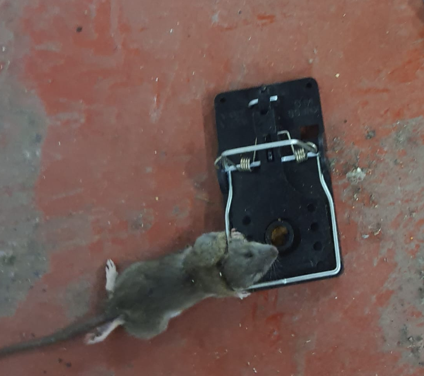
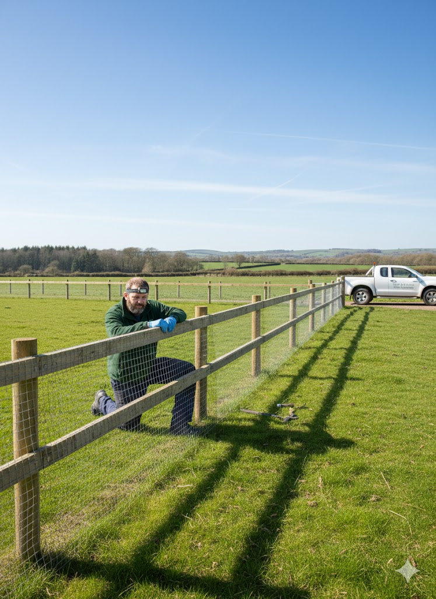
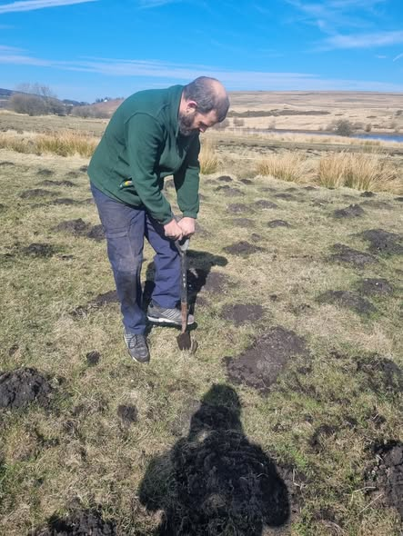
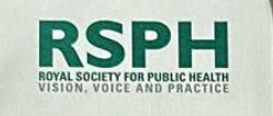

Integrated Pest Management (IPM) for Welsh Farms in 2026

We specialise in **Integrated Pest Management (IPM)** — a proactive, sustainable approach that prioritises prevention, regular monitoring, non-chemical methods and minimal targeted intervention. This aligns with 2026 Red Tractor emphasis on streamlined audits, evidence-based records and reduced bureaucracy while maintaining high standards.
Common pests on farms in Carmarthenshire, Tywi Valley, Brecon Beacons and Mid Wales include rodents, moles and rabbits — causing feed contamination, disease spread, structural damage and audit risks. Our poison-free methods ensure safety for livestock, wildlife and the environment.
Towns & Villages We Serve
We provide farm pest management services in the following towns, villages and rural areas:
- Ammanford
- Llandeilo
- Carmarthen
- Cross Hands
- Pontarddulais
- Pontyberem
- Tumble
- Brynamman
- Brecon
- Crickhowell
- Talgarth
- Sennybridge
- Builth Wells
- Ystradgynlais
- Llanelli
- Gorseinon
- Clydach
- Pontardawe
- Merthyr Tydfil
- Neath
This is a selection of the many locations we regularly cover. If your farm is in or near these areas (or anywhere in South & Mid Wales), call for a free initial assessment.
Our Farm Pest Control Packages
Choose the plan that best fits your farm’s needs. All packages are poison-free, IPM-focused, and include audit-ready documentation for Red Tractor & SALSA compliance. Mole catching is included during routine visits across all plans.
Essential Farm Cover
(Billed annually: £588/year)
- 4 scheduled routine visits per year (quarterly)
- Priority response on call-outs (48–72 hours)
- Discounted emergency visits: £95 each
- moles £12 per mole
- Basic digital pest logs for audits
- Unlimited phone/email advice
Best for: Smaller farms or occasional pest issues
Call to Start This PlanStandard Farm Protection
(Billed annually: £1,428/year)
- 6 scheduled routine visits per year (every 2 months)
- Up to 6 included emergency call-outs per year
- Extra call-outs at £85 each
- moles £8 per mole
- Full Red Tractor/SALSA audit package
- Priority 24–48 hour response
- Free mid-year pest risk review
Best for: Mid-sized farms with moderate pressure or audit needs
Call to Start This PlanComplete Farm & Solar Shield
(Billed annually: £2,628/year)
- 12 monthly routine/preventive visits
- Unlimited emergency call-outs (fair-use after 12/year)
- Same-day/next-day priority response
- Moles: Unlimited included (fair-use applies)
- Complete Red Tractor/SALSA + insurance compliance package
- Solar/PV array checks included
- Dedicated digital portal for reports & history
Best for: Larger farms, solar sites or high-risk properties
Call to Start This PlanAll packages include poison-free methods and compliance documentation. Call David on 07375 303124 for a no-obligation chat about the best fit for your farm.
Key Farm Pest Issues & Compliance Risks

- Rodents: Contaminate feed/grain, chew wiring, spread diseases — major Red Tractor non-conformance risk if uncontrolled.
- Moles: Tunnels cause subsidence, damage roots/machinery, uneven grazing/planting.
- Rabbits: Eat young crops, burrow under fences/buildings, undermine structures.
With 2026 CRRU changes (farm assurance no longer qualifies for professional rodenticides), poison-free IPM is the safest, most compliant path forward.
Our Poison-Free IPM Services

- Prevention & Habitat Management: Proofing (sealing gaps), vegetation control, secure feed storage to reduce attractants.
- Monitoring & Surveys: Regular farm inspections (quarterly or more frequent), digital reporting of signs/activity.
- Non-Chemical Controls: Humane trapping, exclusion barriers, mechanical methods first.
- Targeted Support: Only when necessary — low-risk, documented interventions.
- Audit Compliance: Red Tractor/SALSA-ready plans, bait maps (if ever used), risk assessments, action logs — fully digital for easy inspections.

Why Farms Trust Valley Pest Experts
- Ex-Pestokil expertise — practical, honest, farm-focused solutions.
- 100% poison-free priority — safe for your livestock, soil, water and wildlife.
- Clear digital records & audit trails — simplify Red Tractor/SALSA inspections.
- Local to South & Mid Wales — quick response in rural areas.
- Long-term contracts — ongoing monitoring to prevent recurrence.
Stay compliant in 2026 without poisons — protect your farm today.
Contact for Farm IPM Survey or Plan
Direct to David Hill — no sales teams, just expert advice.
📞 07375 303124 – Free initial farm assessment available
Also see: Solar Farm Pest Protection | Main Hub